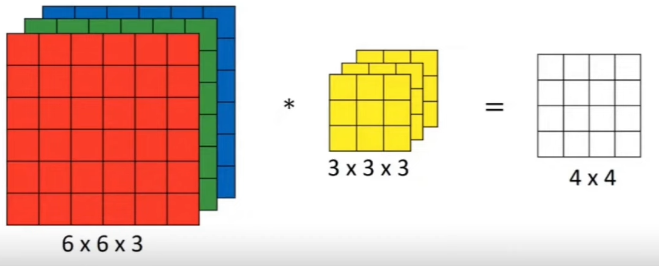
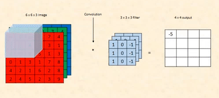

Day 10. By now, you’re not just learning—you’re seeing how everything connects. And today, we go deeper into Convolutional Neural Networks (CNNs) — the architecture that changed AI forever.
Most people know CNNs as the thing that detects cats and dogs, but there’s so much more to them. These networks see the world like we do—breaking down images, finding patterns, and making sense of visual data.
So today, we crack open the mechanics. We’ll explore why convolutions work, how filters detect features, and why CNNs dominate computer vision. Once you get this, you won’t just use CNNs—you’ll know how to build them from the ground up.
Let’s dive in.
One big problem with our original ANN was that it memorized the training data instead of learning useful patterns, aka, it was overfitting. To solve this, we need to make the network smarter by adding some structure.
Structure means setting up the network in a way that it looks for the same patterns in different parts of the data. Instead of trying to memorize everything, it focuses on general patterns, which helps avoid overfitting. The best way to add structure is by using convolutional layers.
See these images? As you can see, it's a grayscale image. Even with your naked eyes, you can detect the edges. But how can a model know this? Before I tell you, you should understand that the image in the center and right are outputs from a CNN architecture. You can see how it segregates the image as such that it's able to understand the edges (the shift from black to white and vice verse).
Before we were talking about convolutional layers. Let's continue from there. In a convolutional layer, instead of connecting every pixel to every neuron like in a regular ANN, we use tiny filters called kernels. These kernels scan through the image looking for simple patterns, like edges or corners. They are used over and over again in different parts of the image, which keeps the network simple and reduces overfitting.
* [ kernel ] =
equates to;
the 3 x 3 matrix is our kernel/filter. We use it to get the edge.
Okay, but some of you might be confused— we are not multiplying matrices here. Let me explain the working.
What are we looking at?
You are multiplying a 6×6 image matrix by a 3×3 kernel (filter) to get a 4×4 output matrix. This operation is called a convolution, and it’s used to detect patterns like edges in an image.
The first matrix represents a 6×6 grayscale image, where each number is a pixel value.
- 0s are black (dark areas).
- 255s are white (bright areas).
In this case, the bottom half of the matrix is white, and the top half is black, resembling a horizontal
edge.
The 3×3 kernel is designed to detect horizontal edges:
- The top row [-1, -1, -1] subtracts intensity from the pixels above.
- The middle row [0, 0, 0] ignores the current pixel values.
- The bottom row [1, 1, 1] adds intensity from the pixels below.
But do you need to know what each weight does? Absolutely not. These weights are updated during back
propagation, and are initialized to be random at the start.
As I said, we're not doing matrix multiplication here,
How do Convolution Works?
1. Place the 3×3 kernel at the top-left corner of the image. This means the kernel
will cover the first 3×3 section of the image:
2. Multiply each value in the kernel with the corresponding value in the image (element-wise multiplication).
3. Add up all the results to get a single value.
This means the output at this position is 0.
4. Move the kernel one step (pixel) to the right and repeat. The kernel now covers the next 3×3 section:
Perform the same element-wise multiplication, sum the results, and again, you’ll get 0. Continue
this process for the entire first row.
5. Once the kernel reaches the end of the first row, move it down one
row and start scanning the second row. For example, when the kernel covers the following section
in the third row:
6. Element-Wise Multiplication:
7. Add Up the Results
The output at this position will be 255, as this is our highest value.
8. Continue moving the kernel across the image, row by row. As the kernel moves into the bottom half of the image, it starts detecting significant differences between the top and bottom rows, producing high values (255).
We'll use these convolutional layers in our MNIST dataset, but if you want you visualize, you can do so here. Just scroll a bit, and you'll see it. One more thing, it has pre-defined filters, For eg., top edge filter will detect top edge.
Last thing, you remember how our 6 x 6 image produced a 4 x 4 output. Why? Is there a specific formula?
where, n is the size of out input, and m is the size of our kernel. So plugging this formula,
(6, 6) * (3, 3) = (6 - 3 + 1, 6 - 3 + 1) = (4, 4)
Oh, and for RGB images, our kernel is like:

The first is for RED, the second for GREEN, and third for BLUE.

In general, we'll use multiple kernels to know about multiple edges.
If we consider using multiple kernels on the same image. For example, if we apply four different 3×3
kernels on an 8×8 image, each kernel would produce a 6×6 feature map. This is because the kernel slides
over the image, generating a smaller
output each time it moves across the image.
Each kernel specializes in detecting a different feature. For instance:
- One kernel may focus on detecting horizontal lines.
- Another may focus on detecting diagonal lines.
- A third might look for vertical edges.
When these kernels operate on the image, the final output from the convolutional layer is obtained by pooling these features. **Max pooling** is a popular technique where the maximum value from each small segment of the feature map is selected, reducing the size further but preserving the most important information.
The kernel works for edge detection, but it has a problem! When the kernel scans the image, it can’t process the edges or corners fully. Why? Because the kernel needs a full 3×3 area to work with, and when it’s placed at the edges of the image, there’s not enough data outside the boundary for it to process. As a result, the output matrix is smaller than the input matrix, losing some information from the edges.
Let’s Break It Down with an Example
Imagine you have a 4×4 image matrix:
Now, let’s apply a 3×3 kernel
When we place this kernel at the top-left corner of the image, it works fine because there’s a full 3×3
area to work with:
The kernel performs its calculations and moves one step to the right. But what happens when the kernel reaches the right edge? There aren’t enough pixels on the right side of the image for the kernel to fully fit, so it skips the edge. Similarly, at the bottom of the image, the kernel skips the bottom row and bottom-right corner for the same reason.
After the kernel scans the image, the output matrix becomes smaller.
We're losing information from the edges and corners because the kernel couldn’t process those areas!
This is very bad!! Let’s say the edges of the image contain important information, like the outline of a shape or object. By ignoring the edges, the output matrix misses that information, which can lead to less accurate results. For example, if this image were part of a face, the skipped edges might include features like eyebrows or a jawline.
This is not the only problem.
There’s another subtle problem with the kernel scanning process: the edges and corners are not treated equally compared to the center pixels. Specifically, center pixels are included in multiple kernel operations, while edge and corner pixels are included fewer times.
When the kernel slides across the image, it overlaps with different sections of the image. The center pixels are included in every kernel operation that involves their area. However, edge pixels are only included in fewer kernel operations because the kernel doesn’t fully extend beyond the image boundaries.
This means that center pixels get counted (multiplied and summed) more often, while edge and corner pixels are processed less frequently. As a result, the importance of edge pixels is diminished in the final output, which can lead to inaccurate detection of features near the edges.
Let’s take a simple 5×5 image:
And a 3×3 kernel:
Now, when the kernel slides over the image:
1. Center Pixels:
- The pixel in the center of the image will appear in 9 different kernel operations (3×3 overlap from all sides).
- This means it will be counted (multiplied and summed) 9 times in total.
2. Edge Pixels:
- A pixel on the top or bottom edge will only appear in 6 kernel operations (it has fewer
neighbors to contribute to overlap).
3. Corner Pixels:
- A pixel in the corner will only appear in **4 kernel operations** (since the kernel can’t extend fully outside the boundary).
This uneven treatment means that the center of the image gets more weight during processing,
while the edges and corners are downplayed. This bias can lead to less accurate edge detection or
feature extraction near the image
boundaries, which might be critical in tasks like object recognition.
For example, if you’re processing an image of a face, the corners of the eyes or the edges of the
lips might not be highlighted as strongly as the center features like the nose or forehead.
Okay, so many problems are depressing; let's talk about our solution.
Solution: Padding!
To solve this, we use padding around the image. Padding adds extra rows and columns of pixels
around the boundary, ssentially expanding its size. This gives the kernel enough room to slide across
the entire image, including its edges,
without losing any data. This also ensures that the kernel can process the edges and corners as fully as
the center.
Example:
If we add 1-pixel padding to the 5×5 image, it becomes:
Now the kernel can process all the edges and corners with equal importance, ensuring that the entire image is treated fairly. This makes the model better at detecting features, especially near the boundaries of the image.
And to reiterate, we add padding at the outer layers. This changed our input to (7, 7) and output to (5,
5) (original matrix size)
Our formula also changes.
So, plugging this formula;
(5, 5) * (3, 3) = (5 +2(1) - 3 + 1, 5 + 2(1) - 3 + 1) = (5, 5)
Enough about padding. Let's learn something interesting.
Stride: What, Why, and How
When working with
convolutional layers, stride is the step size that the kernel takes as it moves across the image.
Instead of sliding the kernel pixel by pixel
(stride = 1), we can skip pixels and make the movement more efficient.
Why Use Stride?
1. Reduce Output Size: A smaller stride means the kernel produces more overlapping
calculations, resulting in a larger output matrix. But sometimes, we don’t need so much detail. A
larger stride reduces the output size,
which helps:
- Reduce computational cost.
- Speed up processing.
- Simplify the model while retaining key patterns.
2. Extract Key Patterns Only: Using a larger stride skips some of the finer details in the
image and focuses on extracting larger, high-level features.
How Does Stride Work?
- Stride = 1: The kernel moves one pixel at a time, both horizontally and vertically. This means the kernel fully overlaps with all neighboring regions. Basically what we were doing till now.
- Stride = 2: The kernel skips one pixel between positions. This reduces overlap and shrinks
the output size.

- Higher Strides: The kernel skips more pixels, resulting in smaller outputs and faster processing.
A stride of (2,2) means we skip 1 pixel both horizontally (columns) and vertically (rows).
Stride in Action
Let’s consider a 6×6 image and a 3×3 kernel with two different strides:
Case 1: Stride = 1 (Default)
The kernel moves 1 pixel at a time.
1. Place the kernel at the top-left corner and perform the convolution operation.
2. Move the kernel 1 step to the right and repeat until the row is finished.
3. Move the kernel down 1 step and start the next row.
4. Continue until the entire image is scanned.
With a stride of 1, the output size is calculated as:
where s is stride.
For a 6×6 image and a 3×3 kernel, the output size is:
Case 2: Stride = 2
The kernel moves 2 pixels at a time, skipping every alternate pixel.
1. Place the kernel at the top-left corner and perform the convolution.
2. Move the kernel 2 steps to the right (instead of 1).
3. Once the row is finished, move the kernel 2 steps down and start the next row.
4. Continue until the kernel has scanned the entire image.
With a stride of 2, the output size becomes:
We floor (round down) the output. Try taking a pen and paper, and drawing one. You'll understand.
If you use padding, the formula changes to:
Okay, enough theory. Let's talk code. I'll write down the code for MNIST in CNN:
import numpy as np, sys
from keras.datasets import mnist
(x_train, y_train), (x_test, y_test) = mnist.load_data() # Load training and testing data (images and labels) from MNIST
images, labels = (x_train[0:1000].reshape(1000, 28 * 28) / 255, y_train[0:1000])
# Normalize the first 1000 training images to the range [0, 1] and flatten them to 1D (28*28 = 784 pixels per image)
one_hot_labels = np.zeros((len(labels), 10)) # Initialize a one-hot encoded label array with 10 classes (digits 0-9). [0, 0, 0, 0, 0, 0, 0, 0, 0, 0]
for i, l in enumerate(labels):
one_hot_labels[i][l] = 1 # Convert labels into a one-hot encoding, where the correct digit index is set to 1. 3-> [0, 0, 0, 1, 0, 0, 0, 0, 0, 0]
labels = one_hot_labels # Update the labels to be one-hot encoded
test_images = x_test.reshape(len(x_test), 28 * 28) / 255 # Normalize the test images and flatten them to 1D (28*28 = 784 pixels per image)
test_labels = np.zeros((len(y_test), 10)) # Initialize a one-hot encoded test label array
for i, l in enumerate(y_test):
test_labels[i][l] = 1 # Convert the test labels into a one-hot encoding
def tanh(x):
return np.tanh(x) # Define the tanh activation function, which is used for introducing non-linearity
def tanh2deriv(output):
return 1 - (output ** 2) # Define the derivative of the tanh function (needed for backpropagation)
def softmax(x):
temp = np.exp(x)
return temp / np.sum(temp, axis=1, keepdims=True) # Define the softmax function for the output layer to convert logits(output values) into probabilities
lr, iterations = (2, 300) # Set the learning rate (lr) and the number of iterations (epochs) for training
pixels_per_image, num_labels = (784, 10) # 784 pixels per image (28x28) and 10 possible labels (digits 0-9)
batch_size = 128 # Batch size for training (how many samples per forward and backward pass). using mini batch GD.
input_rows = 28
input_cols = 28
# Image size: 28x28 pixels
kernel_rows = 3
kernel_cols = 3
num_kernels = 16
# Define the kernel (filter) size: 3x3, and number of kernels: 16 (for the convolutional layer)
hidden_size = ((input_rows - kernel_rows) * (input_cols - kernel_cols)) * num_kernels # Calculate the size of the hidden layer after applying the kernels
kernels = 0.02 * np.random.random((kernel_rows * kernel_cols, num_kernels)) - 0.01 # Initialize the kernels with small random values.
weights_1_2 = 0.2 * np.random.random((hidden_size, num_labels)) - 0.1 # Initialize the weights between the hidden layer and output layer
def get_image_section(layer, row_from, row_to, col_from, col_to):
section = layer[:, row_from:row_to, col_from:col_to]
return section.reshape(-1, 1, row_to - row_from, col_to - col_from)
# Function to extract a section of the image given a row and column range, reshapes it for processing (for our kernel)
for j in range(iterations):
correct_cnt = 0
# Track the number of correct predictions during each iteration
for i in range(int(len(images) / batch_size)):
# Loop through batches of images. essentially divides our images into batches of 128
batch_start, batch_end = ((i * batch_size), ((i + 1) * batch_size))
layer_0 = images[batch_start:batch_end]
layer_0 = layer_0.reshape(layer_0.shape[0], 28, 28)
# Select a batch of images and reshape them to 28x28
sects = list() # List to store image sections (submatrices) for convolution
for row_start in range(layer_0.shape[1] - kernel_rows):
for col_start in range(layer_0.shape[2] - kernel_cols):
sect = get_image_section(layer_0, row_start, row_start + kernel_rows, col_start,
col_start + kernel_cols)
sects.append(sect)
#extracts the portion of image for element wise multiplication in our kernel
# Loop over each position in the image and extract a section for convolution
expanded_input = np.concatenate(sects, axis=1)
es = expanded_input.shape
flattened_input = expanded_input.reshape(es[0] * es[1], -1)
# Flatten the extracted image sections for our NN
kernel_output = flattened_input.dot(kernels) #gets the output
layer_1 = tanh(kernel_output.reshape(es[0], -1)) #apply activation func
layer_2 = softmax(np.dot(layer_1, weights_1_2))
# Pass the output of layer_1 through the softmax function to get final probabilities for each class
for k in range(batch_size):
labelset = labels[batch_start + k: batch_start + k + 1]
_inc = int(np.argmax(layer_2[k:k + 1]) == np.argmax(labelset))
correct_cnt += _inc
# Compare predicted label with the true label and count correct predictions
layer_2_direction_and_amount = (labels[batch_start:batch_end] - layer_2) / (batch_size * layer_2.shape[0])
# Calculate the error (direction_and_amount) in the output layer (used in backpropagation)
layer_1_direction_and_amount = layer_2_direction_and_amount.dot(weights_1_2.T) * tanh2deriv(layer_1)
# Backpropagate the error from the output layer to the hidden layer, apply tanh derivative
weights_1_2 += lr * layer_1.T.dot(layer_2_direction_and_amount)
# Update weights between hidden and output layers using the gradient
l1d_reshape = layer_1_direction_and_amount.reshape(kernel_output.shape)
k_update = flattened_input.T.dot(l1d_reshape)
kernels -= lr * k_update
# Update the kernels (filters) using the gradient calculated during backpropagation
test_correct_cnt = 0
# Track the number of correct predictions on the test set
for i in range(len(test_images)):
layer_0 = test_images[i:i + 1]
layer_0 = layer_0.reshape(layer_0.shape[0], 28, 28)
# Reshape a test image for processing
sects = list()
for row_start in range(layer_0.shape[1] - kernel_rows):
for col_start in range(layer_0.shape[2] - kernel_cols):
sect = get_image_section(layer_0, row_start, row_start + kernel_rows, col_start,
col_start + kernel_cols)
sects.append(sect)
# Extract sections of the image for convolution
expanded_input = np.concatenate(sects, axis=1)
es = expanded_input.shape
flattened_input = expanded_input.reshape(es[0] * es[1], -1)
kernel_output = flattened_input.dot(kernels)
layer_1 = tanh(kernel_output.reshape(es[0], -1))
# Convolve and pass through tanh activation
layer_2 = np.dot(layer_1, weights_1_2)
# Compute output probabilities
test_correct_cnt += int(np.argmax(layer_2) == np.argmax(test_labels[i:i + 1]))
# Compare the predicted label with the true label for test data
if (j % 1 == 0):
sys.stdout.write(
"\n" + "I:" + str(j) + " Test-Acc:" + str(test_correct_cnt / float(len(test_images))) + " Train-Acc:" + str(
correct_cnt / float(len(images))))
# Print the test and training accuracy every iteration
I:299 Test-Acc:0.8774 Train-Acc:0.81And that's definitely an upgrade from our previous approach. Even if our training accuracy is not 100% (which is generally a sign of overfitting), we get better test accuracy of 87.74%, compared to our previous 70.7%. Even in real world, we generally need to increase the test accuracy, rather than training. If you want to increase the accuracy, try adding more convolutional layers.
If you've tried running the code, it might take some time. In the meantime, let's talk about the new activation function we defined, i.e., tanh, and softmax.
1. tanh (Hyperbolic Tangent) Activation Function
The tanh function is a widely used activation function, especially in early neural networks. It transforms input values into a range between -1 and 1, making it a non-linear function.
This results in an output that:
- Is bounded between -1 and 1 (i.e., for any input x, the output will be in the range [-1, 1]).
- Can model both positive and negative values, which helps when processing data that has both positive and negative features.
Okay, but we already have ReLU, why use tanh?
The
tanh function is often used in hidden layers of neural networks because it helps center the data
around 0. This means
it can handle both positive and negative activations and helps the model converge faster than other
activation functions like sigmoid, which only ranges between 0 and 1.
- It has a nice symmetry around zero, which makes it useful when learning both negative and positive weights.
- Derivative of tanh is easy to compute:
This is very convenient for backpropagation.
Now, let’s look at how tanh works mathematically and why this squashing behavior is important.
Imagine you have an input value to a neuron (after the convolution and weighted summation) that is 5:
- tanh(5) =
For a very large positive number, tanh squashes it into something close to 1.
Now imagine the input is -5:
-
tanh(-5) =
For very negative numbers, tanh squashes it into something close to -1.
What we have here is that for large inputs (whether positive or negative), tanh squashes the output
to 1 or -1, but for inputs near zero, it outputs something in between, which can help learning. This
helps the network to focus
on important features and prevents the neurons from getting stuck in extreme values.
2. Softmax Activation Function
The softmax function is usually applied at the output layer of a classification neural network, especially for multi-class classification tasks. It converts a vector of raw scores (often called logits) into probabilities. We use it to convert output vector to probabilities.
For a vector of raw scores
Where:
-
is the score of the i-th class (before applying softmax).
- The denominator is the sum of all exponentiated scores, ensuring that the outputs sum to 1.
Suppose the raw outputs (logits) from the final layer of the network are:
To apply softmax:
1. Exponentiate each value:
2. Sum the exponentiated values:
3. Divide each exponentiated value by the sum to get the probabilities:
So, the probabilities of the three classes would be approximately 65.9%, 24.3%, and 9.8%, respectively. The class with the highest probability (class 1 in this case) is chosen as the predicted class.
When choosing an activation function, there are a few general guidelines to follow based on your network architecture and problem. Here's a simple comparison of some of the most popular activation functions:
1. Sigmoid
- Range: 0 to 1
- Use: Good for binary classification, but can suffer from vanishing gradients (gradients become very small, almost close to 0, which stops learning, after all, x + 0.0000001 doesn't help much).
- Drawback: Outputs are always positive, so it’s not zero-centered.
2. Tanh
- Range: -1 to 1
- Use: Good for general use, especially when data is centered around zero (like MNIST).
- Drawback: Can still suffer from vanishing gradients for very large or very small inputs.
3. ReLU (Rectified Linear Unit)
- Range: 0 to ∞ (non-negative)
- Use: Works well in deep networks, especially for image and speech recognition.
- Drawback: Can lead to the dying ReLU problem (if the neuron starts producing only zeroes).
4. Softmax
- Range: 0 to 1 (but for a vector of values)
- Use: Converts logits into probabilities that sum to 1, which is useful for classification tasks.
- Drawback: Does not have the same properties as the others in terms of local activation.
Rule of Thumb for Choosing Activation Functions:
When in doubt: Start with ReLU for hidden
layers, and use softmax for output in classification tasks.
And.... we're done.
CONGRATULATIONS!!!
And just like that, you’ve taken a deep dive into the world of
Convolutional Neural Networks (CNNs). From understanding convolutions to mastering pooling layers,
you've unlocked the secret sauce behind image recognition, video analysis, and so much more. You’ve
seen how CNNs allow machines to understand the world pixel by pixel—an impressive feat for something
that doesn’t even have eyes!
Remember, CNNs might seem complicated at first glance, but as
we’ve just explored, they break down into digestible, manageable pieces. Every convolution and
filter you learn to implement brings you one step closer to mastering not only the math behind them
but also their real-world applications.
You’ve done it again—connected more neurons (this
time, with pixels!). Keep up the momentum. The world of deep learning is vast, and you’ve only just
scratched the surface. Go ahead, experiment, and apply these concepts in your own projects. Who
knows what you’ll create next?
Keep learning and coding, the best is yet to come!
Now
do re-read the whole thing again. Until you can understand every concept.
Take a pen and paper; and make notes. Revise. And remember, nothing is tough.
You just need to have the hunger for knowledge.
If you found this content helpful and would like to support, feel free to contribute. Your support isn’t just a donation—it’s a step toward building something bigger, together.
Donate via PayPal